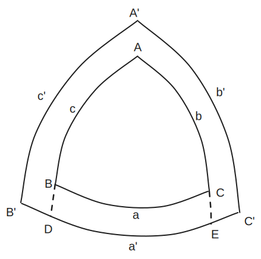
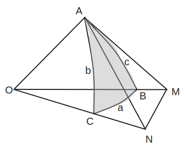
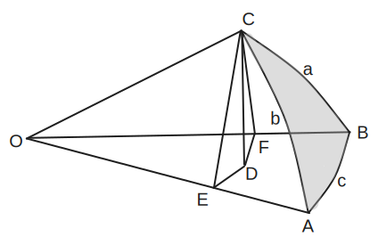
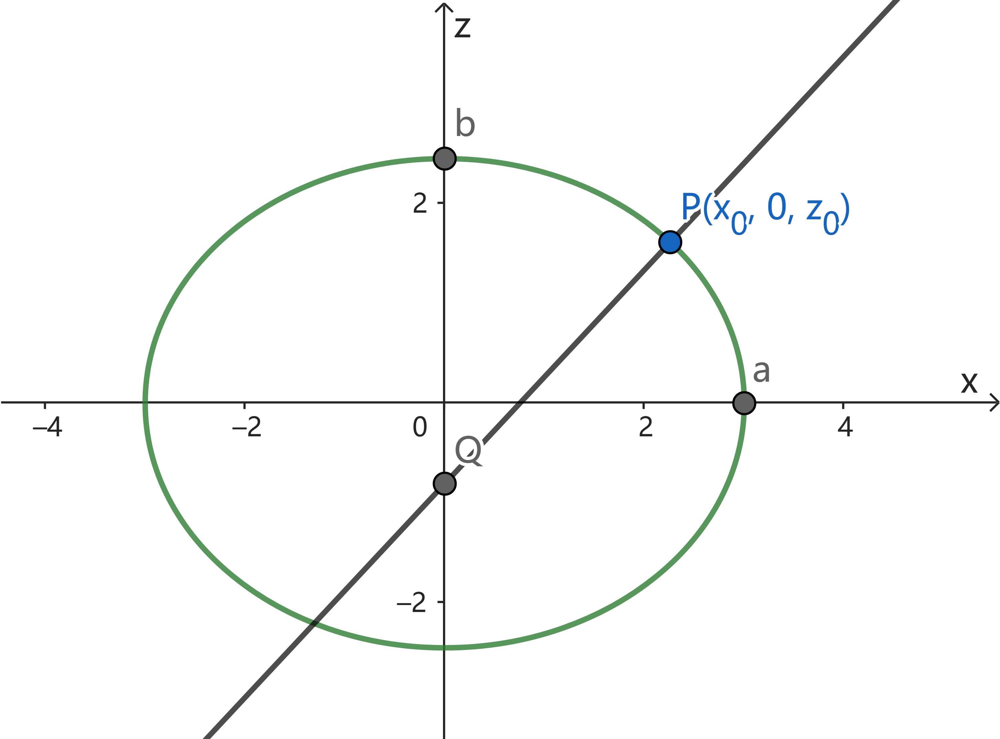

[来自 yangqiao@知乎]
基本概念
- 过球心的平面与球面的交线叫做大圆; 不过球心的平面与球面的交线 (如果存在) 叫小圆.
- 过球面上任意两点可做一个大圆:
当这两点位于一条直径的两端时, 可做无数个大圆, 否则只能做一个.
大圆位于两点之间的部分叫做大圆弧.
-
球面上两个大圆总是相交于两点, 这两点位于一条直径的两端.
两个大圆交点处的切线夹角叫做球面角.
- 球面上的三个点用大圆弧相连, 围成的图形叫做球面三角形.
三个球面角叫做球面三角形的角, 用大写字母 `A, B, C`表示;
三个大圆弧叫做球面三角形的边, 用小写字母 `a, b, c` 表示.
注意 `a, b, c` 通常视作角度而不是弧长.
边角的基本性质
过球心, 作大圆所在平面的垂线, 与球面交于两点, 称为大圆的极.
如果 `A', B', C'` 分别是球面三角形 `ABC` 三边的极, 则 `A'B'C'` 称为 `ABC` 的极三角形.
- 若 `A'B'C'` 是 `ABC` 的极三角形, 则 `ABC` 也是 `A'B'C'` 的极三角形.
- 极三角形的边与原三角形的对应角互补，角与原三角形的对应边互补.

-
由 `B'` 是 `arc(AC)` 的极, 有 `arc(B'A) = pi//2`.
由 `C'` 是 `arc(AB)` 的极, 有 `arc(C'A) = pi//2`.
由立体几何知, `AO` 垂直于 `B'C'` 所在的平面, 即 `A` 是 `B'C'` 的极.
-
设 `arc(B'C')` 交 `arc(AB)` 于 `D`, 交 `arc(AC)` 于 `E`.
因为 `B'` 是 `b` 的极, `C'` 是 `c` 的极, 所以 `arc(B'E) = arc(C'D) = pi//2`.
从而
`arc(B'C') + arc(DE)`
`= arc(B'E) + arc(C'D) = pi`.
由 1. 知 `A` 是 `arc(B'C')` 的极, 故 `arc(DE) = A`, 此与 `arc(B'C') = a'` 一起代入上式有
`a' + A = pi`.
球面三角形两边之和大于第三边.
将球面三角形 `ABC` 的顶点与球心 `O` 连接, 由立体几何知: 三面角的两个面角之和大于第三个面角,
从而球面三角形两边之和大于第三边.
- 球面三角形三边之和的范围: `(0, 2pi)`.
- 球面三角形三角之和的范围: `(pi, 3pi)`.
-
因为 `a, b, c` 均为正, 所以和大于 0. 又由立体几何知凸多面角各面角之和小于 `2pi`, 所以和小于 `2pi`.
-
由极三角形和原三角形的关系得: `a' + A = pi`,
从而 `A+B+C = 3pi - (a' + b' + c')`. 再由 1. 即得到结论.
球面三角形中: 等角对等边, 等边对等角; 大角对大边, 大边对大角.
六个基本公式
边的余弦公式 `cos a = cos b cos c + sin b sin c cos A`.
角的余弦公式 `cos A = - cos B cos C + sin B sin C cos a`.

过点 `A` 做 `b, c` 的切线, 分别交 `OB`, `OC` 的延长线于 `M`, `N`.
在平面三角形 `OMN`, `AMN` 中, 分别由余弦定理得
`MN^2 = OM^2 + ON^2 - 2 OM * ON * cos a`,
`MN^2 = AM^2 + AN^2 - 2 AM * AN * cos A`.
将第二式代入第一式得到
`2OM * ON * cos a`
`= (OM^2 - AM^2) + (ON^2 - AN^2) + 2 AM * AN * cos A`
`= 2 OA^2 + 2AM * AN * cos A`.
于是
`cos a = (OA)/(OM) * (OA)/(ON) + (AM)/(OM) * (AN)/(ON) * cos A`
`= cos c cos b + sin c sin b cos A`.
利用极三角形与原三角形的关系, 将上式的 `a` 换成 `pi - A`, `A` 换成 `pi - a`,
依此类推; 就得到角的余弦公式.
正弦公式 `(sin a)/(sin A) = (sin b)/(sin B) = (sin c)/(sin C)`.

过点 `C` 作平面 `OAB` 的垂线, 垂足为 `D`, 再从 `D` 向 `OA`, `OB` 作垂线, 垂足分别为 `E, F`.
易知 `OA` 与平面 `CDE` 垂直, `OB` 与平面 `CDF` 垂直, 因此 `/_ CED = A`, `/_ CFD = B`.
由图知
`(sin a)/(sin A) = (CF//OC)/(CD//CE)`,
`(sin b)/(sin B) = (CE//OC)/(CD//CF)`.
因此 `(sin a)/(sin A) = (sin b)/(sin B)`.
-
五元素公式 (1) `sin a cos B = cos b sin c - sin b cos c cos A`.
五元素公式 (2) `sin A cos b = cos B sin C + sin B cos C cos a`.
-
四元素公式 `sin A cot B = sin c cot b - cos c cos A`.
-
由边的余弦公式,
`cos a = cos b cos c + sin b sin c cos A`,
`cos b = cos c cos a + sin c sin a cos B`.
将第一式代入第二式得到
`sin c sin a cos B`
`= cos b - cos c (cos b cos c + sin b sin c cos A)`
`= cos b - cos b cos^2 c - sin b sin c cos c cos A`
`= cos b sin^2 c - sin b sin c cos c cos A`.
两边同除以 `sin c` 即得公式 (1).
再利用极三角形与原三角形的关系得到公式 (2).
-
利用正弦公式, 在五元素公式 (1) 左边乘以 `(sin A)/(sin a sin B)`,
右边乘以 `1/(sin b)` 即得结论.
球面三角的面积
Gauss-Bonnet 公式
球面三角形的面积 `S = R^2(A + B + C - pi)`.
其中 `R` 是球的半径, `A, B, C` 是三个球面角.
球面三角形三个角都是 90 度时, 用 Gauss-Bonnet 公式求得面积为 `pi R^2 //2`, 恰好是球面的 `1//8`.
杂例
已知球面上两点的经纬度求弧长.
设它们的经纬度是 `(theta_1, varphi_1)`, `(theta_2, varphi_2)`, 化为直角坐标:
`x = R cos varphi cos theta`,
`y = R cos varphi sin theta`,
`z = R sin varphi`.
求球心到两个点的向量 `bm r_1, bm r_2` 夹角
`cos alpha = cos varphi_1 cos varphi_2 (cos theta_1 cos theta_2 + sin theta_1 sin theta_2)`
`+ sin varphi_1 sin varphi_2`
`= cos varphi_1 cos varphi_2 cos(theta_1 - theta_2) + sin varphi_1 sin varphi_2`
`= cos(varphi_1 - varphi_2) - cos varphi_1 cos varphi_2(1 - cos(theta_1 - theta_2))`.
而弧长等于 `R alpha`.
已知球面上三点的经纬度求球面角 `ABC`.
球面上两点间的大圆弧的轨迹方程.
球心到这两个点的向量为 `bm r_1, bm r_2`.
单位法向量为 `bm n = (bm r_1 xx bm r_2) / |bm r_1 xx bm r_2|`. 设 `bm r` 是 `bm r_1` 绕 `bm n` 旋转 `alpha` 角所得的向量,
由三维旋转公式 (矩阵形式) 有 `bm r = bm T bm r_1`, 其中
`bm T = (1 - cos alpha) bm n bm n^(sf T) + cos alpha bm I + sin alpha`
`[0, -n_z, n_y; n_z, 0, -n_x; -n_y, n_x, 0]`.
此即关于 `alpha` 的一个参数方程. 通过反变换
`theta = arctan(y//x)`,
`varphi = arcsin(z//R)`
即得到关于 `(theta, varphi)` 的参数方程.
墨卡托投影 (Mercator Projection)
假设地球是正球体, 球心处的光源将球面上的点投影到外切圆柱面上, 再把圆柱展开, 就得到地球的墨卡托投影.
墨卡托投影不适合高纬度地区, 因为高纬地区的图形畸变过大. 特别地,
南北极点被投影到无穷远处, 在地图上无法显示.
墨卡托投影的重要性质是等角性.
wgs84 标准假设地球是一个椭球体, 方程为
`(x^2+y^2)/a^2 + z^2/b^2 = 1`.
其中 `a = 6378137"m"`, `b = 6356752.31424518"m"`,
已知地球上一点 `P` 的经纬度和高度 `(theta, varphi, h)`, 求这点的坐标.
-
这个问题的重点是得到 `P` 点处的「卯酉圈」曲率半径
`n = a^2/sqrt(a^2 cos^2 varphi + b^2 sin^2 varphi)`.
`(**)`
于是这点的坐标是
`x = (n + h) cos varphi cos theta`,
`y = (n + h) cos varphi sin theta`,
`z = (n * b^2/a^2 + h) sin varphi`.
`z` 的求法是, 先假设 `h = 0`, 再把 `x, y` 代入椭球面方程求解.
-
我们来导出 `P` 点处的曲率半径公式 `(**)`.
取定椭球面的参数方程
`bm r = (a cos u cos v, a cos u sin v, b sin u)`,
`bm r_u = (-a sin u cos v, -a sin u sin v, b cos u)`,
`bm r_v = (-a cos u sin v, a cos u cos v, 0)`.
使用旋转曲面的公式得到
`E = a^2 sin^2 u + b^2 cos^2 u`,
`quad L = a b//sqrt E`,
`quad N = a b cos^2 u // sqrt E`.
由对称性, 我们可以任取一个子午面 (椭球过 z 轴的截面), 如 `xOz` 平面, 考虑椭球面上一点
`P(x_0, 0, z_0)`.

注意, 椭球面上过 `P` 点有无数个单位切向量, 每一个切向量都确定了 `P` 处的一个曲率.
我们要求的曲率是「卯酉圈」在 `P` 处的曲率, 即 `P` 点处垂直于子午面的单位切向量所确定的曲率.
显然, 在我们的假定下, 这个切向量就是 `bm v = (0, 1, 0)`.
在 `P` 处, 参数 `v = 0`, 参数 `u` 满足 `a cos u = x_0`, 于是切向量 `bm r_u, bm r_v` 等于
`bm r_u = (-a sin u, 0, b cos u)`,
`quad bm r_v = (0, x_0, 0)`.
将 `v` 分解为 `bm r_u, bm r_v` 的线性组合:
`bm v = 0 bm r_u + 1/x_0 bm r_v`.
则 `P` 处沿 `bm v` 的法曲率等于
`k_n(bm v) = 0^2 L + 1/x_0^2 N`
`= b/a 1/sqrt(a^2 sin^2 u + b^2 cos^2 u)`
`= 1/(a/b sqrt(a^2/b^2 z_0^2 + b^2/a^2 x_0^2))`
`= 1/sqrt(x_0^2 + a^4/b^4 z_0^2)`
而曲率半径 `n = 1//k_n(bm v) = sqrt(x_0^2 + a^4/b^4 z_0^2)`.
-
现在我们用纬度 (纬度是指法线 `PQ` 与 `x` 轴的夹角, 而不是 `/_ POx` 😭) 表示曲率半径.
假定 `P` 的纬度为 `varphi`, 联立法线斜率 `tan varphi = z_0/x_0 a^2/b^2` 和子午圈方程
`x_0^2/a^2 + z_0^2/b^2 = 1` 可得
`x_0 = a/sqrt(1 + b^2/a^2 tan^2 varphi)`.
于是
`n = sqrt(x_0^2 + a^4/b^4 z_0^2)`
`= x_0 sqrt(1 + tan^2 varphi)`
`= x_0 // cos varphi`
`= a/sqrt(1 + b^2/a^2 tan^2 varphi) 1/(cos varphi)`
`= a^2/sqrt(a^2 cos^2 varphi + b^2 sin^2 varphi)`.
- 最后, 反向延长 `P` 处的法线, 交 `z` 轴于 `Q` 点, 交 `x` 轴于 `R` 点,
则 `|PQ|` 正好等于前文所求的曲率半径 `n`, `|RQ| = (1-b^2/a^2)|PQ| = e^2 n`.
验证如下: `P` 处的法线方程为
`(z_0 x)/b^2 - (x_0 z)/a^2 = x_0 z_0(1/b^2 - 1/a^2)`.
即
`x/(x_0(1 - b^2/a^2)) - z/(z_0(a^2/b^2 - 1)) = 1`.
于是 `x_R = x_0 (1 - b^2/a^2)`, `z_Q = -z_0(a^2/b^2 - 1)`,
`|PQ| = sqrt(x_0^2 + (z_0 - z_Q)^2)`
`= sqrt(x_0^2 + a^4/b^4 z_0^2) = n`.
`|RQ|/|PQ| = x_R/x_0 = 1-b^2/a^2 = e^2`.
运用以上几何性质不难推出 `P` 点的坐标为
`x = n cos varphi cos theta`,
`y = n cos varphi sin theta`,
`z = n * b^2/a^2 sin varphi`.